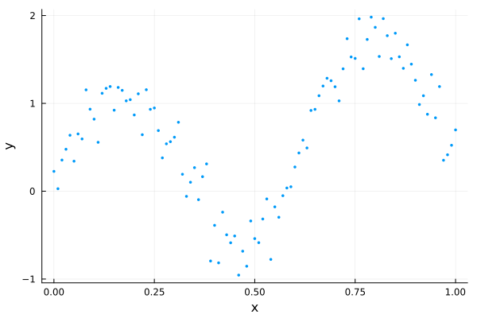

Initializing HMC with Pathfinder
The MCMC warm-up phase
When using MCMC to draw samples from some target distribution, there is often a lengthy warm-up phase with 2 phases:
- converge to the typical set (the region of the target distribution where the bulk of the probability mass is located)
- adapt any tunable parameters of the MCMC sampler (optional)
While (1) often happens fairly quickly, (2) usually requires a lengthy exploration of the typical set to iteratively adapt parameters suitable for further exploration. An example is the widely used windowed adaptation scheme of Hamiltonian Monte Carlo (HMC) in Stan [3], where a step size and positive definite metric (aka mass matrix) are adapted. For posteriors with complex geometry, the adaptation phase can require many evaluations of the gradient of the log density function of the target distribution.
Pathfinder can be used to initialize MCMC, and in particular HMC, in 3 ways:
- Initialize MCMC from one of Pathfinder's draws (replace phase 1 of the warm-up).
- Initialize an HMC metric adaptation from the inverse of the covariance of the multivariate normal approximation (replace the first window of phase 2 of the warm-up).
- Use the inverse of the covariance as the metric without further adaptation (replace phase 2 of the warm-up).
This tutorial demonstrates all three approaches with DynamicHMC.jl and AdvancedHMC.jl. Both of these packages have standalone implementations of adaptive HMC (aka NUTS) and can be used independently of any probabilistic programming language (PPL). Both the Turing and Soss PPLs have some DynamicHMC integration, while Turing also integrates with AdvancedHMC.
For demonstration purposes, we'll use the following dummy data:
using LinearAlgebra, Pathfinder, Random, StatsFuns, StatsPlots
Random.seed!(91)
x = 0:0.01:1
y = @. sin(10x) + randn() * 0.2 + x
scatter(x, y; xlabel="x", ylabel="y", legend=false, msw=0, ms=2)
We'll fit this using a simple polynomial regression model:
\[\begin{aligned} \sigma &\sim \text{Half-Normal}(\mu=0, \sigma=1)\\ \alpha, \beta_j &\sim \mathrm{Normal}(\mu=0, \sigma=1)\\ \hat{y}_i &= \alpha + \sum_{j=1}^J x_i^j \beta_j\\ y_i &\sim \mathrm{Normal}(\mu=\hat{y}_i, \sigma=\sigma) \end{aligned}\]
We just need to implement the log-density function of the resulting posterior.
struct RegressionProblem{X,Z,Y}
x::X
J::Int
z::Z
y::Y
end
function RegressionProblem(x, J, y)
z = x .* (1:J)'
return RegressionProblem(x, J, z, y)
end
function (prob::RegressionProblem)(θ)
(; σ, α, β) = θ
(; z, y) = prob
lp = normlogpdf(σ) + logtwo
lp += normlogpdf(α)
lp += sum(normlogpdf, β)
y_hat = muladd(z, β, α)
lp += sum(eachindex(y_hat, y)) do i
return normlogpdf(y_hat[i], σ, y[i])
end
return lp
end
J = 3
dim = J + 2
model = RegressionProblem(x, J, y)
ndraws = 1_000;DynamicHMC.jl
To use DynamicHMC, we first need to transform our model to an unconstrained space using TransformVariables.jl and wrap it in a type that implements the LogDensityProblems interface (see DynamicHMC's worked example):
using DynamicHMC, ForwardDiff, LogDensityProblems, LogDensityProblemsAD, TransformVariables
using TransformedLogDensities: TransformedLogDensity
transform = as((σ=asℝ₊, α=asℝ, β=as(Array, J)))
P = TransformedLogDensity(transform, model)
∇P = ADgradient(:ForwardDiff, P)ForwardDiff AD wrapper for TransformedLogDensity of dimension 5, w/ chunk size 5Pathfinder can take any object that implements this interface.
result_pf = pathfinder(∇P)Single-path Pathfinder result
tries: 1
draws: 5
fit iteration: 15 (total: 32)
fit ELBO: -117.26 ± 0.31
fit distribution: MvNormal{Float64, Pathfinder.WoodburyPDMat{Float64, LinearAlgebra.Diagonal{Float64, Vector{Float64}}, SubArray{Float64, 2, Matrix{Float64}, Tuple{Base.Slice{Base.OneTo{Int64}}, UnitRange{Int64}}, true}, SubArray{Float64, 2, Matrix{Float64}, Tuple{UnitRange{Int64}, UnitRange{Int64}}, false}, Pathfinder.WoodburyPDFactorization{Float64, LinearAlgebra.Diagonal{Float64, Vector{Float64}}, LinearAlgebra.QRCompactWYQ{Float64, Matrix{Float64}, Matrix{Float64}}, LinearAlgebra.UpperTriangular{Float64, Matrix{Float64}}}}, Vector{Float64}}(
dim: 5
μ: [-0.35193742700410935, 0.24690057827096018, 0.058275909838503406, 0.11655164694993449, 0.1748277269644423]
Σ: [0.004969260386823802 -0.00022439906193893872 … 0.0005189002458741813 -0.00023506400254479933; -0.00022439906193893978 0.025867129109411566 … -0.01779977956847807 -0.0001980219914094575; … ; 0.0005189002458742377 -0.017799779568478193 … 0.7439351581810383 -0.4384953090628637; -0.00023506400254479217 -0.00019802199140949003 … -0.4384953090628636 0.2653368085371764]
)
init_params = result_pf.draws[:, 1]5-element Vector{Float64}:
-0.25036201794554275
0.5065819848981503
0.0856189681171046
0.043399132307245555
0.024952642636275196inv_metric = result_pf.fit_distribution.Σ5×5 Pathfinder.WoodburyPDMat{Float64, LinearAlgebra.Diagonal{Float64, Vector{Float64}}, SubArray{Float64, 2, Matrix{Float64}, Tuple{Base.Slice{Base.OneTo{Int64}}, UnitRange{Int64}}, true}, SubArray{Float64, 2, Matrix{Float64}, Tuple{UnitRange{Int64}, UnitRange{Int64}}, false}, Pathfinder.WoodburyPDFactorization{Float64, LinearAlgebra.Diagonal{Float64, Vector{Float64}}, LinearAlgebra.QRCompactWYQ{Float64, Matrix{Float64}, Matrix{Float64}}, LinearAlgebra.UpperTriangular{Float64, Matrix{Float64}}}}:
0.00496926 -0.000224399 -4.08538e-5 0.0005189 -0.000235064
-0.000224399 0.0258671 -0.00139474 -0.0177998 -0.000198022
-4.08538e-5 -0.00139474 0.0389439 -0.145762 0.0852677
0.0005189 -0.0177998 -0.145762 0.743935 -0.438495
-0.000235064 -0.000198022 0.0852677 -0.438495 0.265337Initializing from Pathfinder's draws
Here we just need to pass one of the draws as the initial point q:
result_dhmc1 = mcmc_with_warmup(
Random.default_rng(),
∇P,
ndraws;
initialization=(; q=init_params),
reporter=NoProgressReport(),
)(posterior_matrix = [-0.49912685390351225 -0.21226669176773913 … -0.41612962219114724 -0.25912084007902914; 0.18388208969140277 0.1556856672654443 … 0.11848140373490794 0.08844310146419457; … ; -0.1114523615808902 -0.684566823015516 … 0.49215733053894767 -1.0108072408064088; 0.8829339977315572 0.9017424177305386 … 0.12284289558184433 0.8416891871940237], tree_statistics = DynamicHMC.TreeStatisticsNUTS[DynamicHMC.TreeStatisticsNUTS(-116.7907488526864, 6, turning at positions -56:-71, 0.9777756982466468, 79, DynamicHMC.Directions(0xeb99d988)), DynamicHMC.TreeStatisticsNUTS(-118.15689066503838, 6, turning at positions -54:9, 0.9039772416101891, 63, DynamicHMC.Directions(0xc5630e09)), DynamicHMC.TreeStatisticsNUTS(-116.4774976027741, 5, turning at positions 5:36, 0.9533790919109444, 63, DynamicHMC.Directions(0x6bf92064)), DynamicHMC.TreeStatisticsNUTS(-115.09743702454345, 6, turning at positions -12:51, 0.9941691048895397, 63, DynamicHMC.Directions(0xe137bff3)), DynamicHMC.TreeStatisticsNUTS(-116.96759689096893, 7, turning at positions -32:95, 0.9863529445469617, 127, DynamicHMC.Directions(0x76e3dadf)), DynamicHMC.TreeStatisticsNUTS(-116.5105020287646, 6, turning at positions 39:102, 0.9999917835372152, 127, DynamicHMC.Directions(0x3a219e66)), DynamicHMC.TreeStatisticsNUTS(-121.13068877102182, 6, turning at positions 25:88, 0.7055536363145756, 127, DynamicHMC.Directions(0x59d3c358)), DynamicHMC.TreeStatisticsNUTS(-119.55704461578553, 2, turning at positions -3:0, 0.6201976565606705, 3, DynamicHMC.Directions(0x970badf4)), DynamicHMC.TreeStatisticsNUTS(-117.17447151775981, 5, turning at positions 3:34, 0.9959954355370644, 63, DynamicHMC.Directions(0xd833b5a2)), DynamicHMC.TreeStatisticsNUTS(-115.86785632123308, 6, turning at positions -11:52, 0.9183533746316914, 63, DynamicHMC.Directions(0x0655fb34)) … DynamicHMC.TreeStatisticsNUTS(-116.07199468073036, 7, turning at positions -38:89, 0.9892986275514759, 127, DynamicHMC.Directions(0x691aea59)), DynamicHMC.TreeStatisticsNUTS(-115.5571890806773, 7, turning at positions -5:122, 0.9848327047509868, 127, DynamicHMC.Directions(0xefaead7a)), DynamicHMC.TreeStatisticsNUTS(-115.56171726298076, 7, turning at positions -43:84, 0.9986420523383763, 127, DynamicHMC.Directions(0xb3fa5b54)), DynamicHMC.TreeStatisticsNUTS(-114.12246046236775, 6, turning at positions -18:45, 0.9997582648787002, 63, DynamicHMC.Directions(0xa283732d)), DynamicHMC.TreeStatisticsNUTS(-115.31346972444001, 6, turning at positions -6:57, 0.9149397145657998, 63, DynamicHMC.Directions(0x5637f7b9)), DynamicHMC.TreeStatisticsNUTS(-118.69145387326638, 6, turning at positions 13:76, 0.9308196413228497, 127, DynamicHMC.Directions(0xa372bb4c)), DynamicHMC.TreeStatisticsNUTS(-118.12237803382506, 6, turning at positions 31:94, 0.9781284930675839, 127, DynamicHMC.Directions(0xdbbe0bde)), DynamicHMC.TreeStatisticsNUTS(-114.31838047847235, 6, turning at positions -4:59, 0.9777751050034493, 63, DynamicHMC.Directions(0xdf37403b)), DynamicHMC.TreeStatisticsNUTS(-115.30386061094073, 5, turning at positions -8:-39, 0.9732539161173981, 63, DynamicHMC.Directions(0x8fc63418)), DynamicHMC.TreeStatisticsNUTS(-116.2184193492802, 6, turning at positions -5:58, 0.9679520934067671, 63, DynamicHMC.Directions(0xaac17b3a))], logdensities = [-116.27013625413119, -115.01229222152635, -112.6697093354834, -114.38644122165327, -114.73479006645235, -114.70944748861262, -116.91450115267388, -116.94429333243545, -114.76450905969169, -114.39574081937492 … -113.66442512361014, -113.8335052047259, -113.93476061248758, -112.74096609674262, -114.38258043307134, -114.01245292549184, -113.78594547126195, -112.71120374169206, -113.73249647643986, -114.88726944925826], κ = Gaussian kinetic energy (Diagonal), √diag(M⁻¹): [0.07733809009204536, 0.13586695766744838, 0.9627231001254747, 0.8675119803245529, 0.6250299093951435], ϵ = 0.045992486855696395)When initializing several independent chains from a multipathfinder result, use resample with replace=false to obtain distinct starting points. See Resampling for details.
Initializing metric adaptation from Pathfinder's estimate
To start with Pathfinder's inverse metric estimate, we just need to initialize a DynamicHMC.GaussianKineticEnergy object with it as input:
result_dhmc2 = mcmc_with_warmup(
Random.default_rng(),
∇P,
ndraws;
initialization=(; q=init_params, κ=GaussianKineticEnergy(inv_metric)),
warmup_stages=default_warmup_stages(; M=Symmetric),
reporter=NoProgressReport(),
)(posterior_matrix = [-0.41274310790953966 -0.4713177117662069 … -0.55040125017853 -0.3348219298984808; 0.06795280760076593 0.03744105075720908 … 0.006687702202677191 0.18049860371250254; … ; 0.25330085508790245 -0.8275496534967623 … 0.9075101135401586 -0.5016929822475142; 0.18595095502042558 1.0956313111317257 … -0.23390709555765962 0.2133221685032487], tree_statistics = DynamicHMC.TreeStatisticsNUTS[DynamicHMC.TreeStatisticsNUTS(-116.4035419684644, 3, turning at positions -6:1, 0.9998000325157342, 7, DynamicHMC.Directions(0x9fee37a1)), DynamicHMC.TreeStatisticsNUTS(-117.62684228232449, 3, turning at positions 7:14, 0.8461528237129062, 15, DynamicHMC.Directions(0xe2928c2e)), DynamicHMC.TreeStatisticsNUTS(-120.23582879278158, 4, turning at positions -14:1, 0.9731140560454321, 15, DynamicHMC.Directions(0x3722bea1)), DynamicHMC.TreeStatisticsNUTS(-118.27326557020591, 3, turning at positions -2:5, 0.9999630136290474, 7, DynamicHMC.Directions(0x5c49d14d)), DynamicHMC.TreeStatisticsNUTS(-116.96422540574777, 3, turning at positions -5:2, 0.9999999999999999, 7, DynamicHMC.Directions(0xd098f2d2)), DynamicHMC.TreeStatisticsNUTS(-120.24767394271959, 4, turning at positions -11:4, 0.7187090049098337, 15, DynamicHMC.Directions(0x034653a4)), DynamicHMC.TreeStatisticsNUTS(-114.43625051545587, 3, turning at positions -4:3, 0.9602101451305965, 7, DynamicHMC.Directions(0x4643290b)), DynamicHMC.TreeStatisticsNUTS(-114.96536709909479, 4, turning at positions -3:12, 0.9746526242131128, 15, DynamicHMC.Directions(0x6c685c8c)), DynamicHMC.TreeStatisticsNUTS(-114.09552374162527, 3, turning at positions -6:1, 0.971791257707178, 7, DynamicHMC.Directions(0x730a4f81)), DynamicHMC.TreeStatisticsNUTS(-118.13444723319351, 4, turning at positions -2:13, 0.7807852527984409, 15, DynamicHMC.Directions(0x87e139ed)) … DynamicHMC.TreeStatisticsNUTS(-116.92900238545943, 4, turning at positions -4:11, 0.9837116734138414, 15, DynamicHMC.Directions(0x94d7853b)), DynamicHMC.TreeStatisticsNUTS(-117.08511160741861, 3, turning at positions 0:7, 0.9790729416012549, 7, DynamicHMC.Directions(0xc953c227)), DynamicHMC.TreeStatisticsNUTS(-115.4509709540961, 3, turning at positions 1:8, 0.9743738283718402, 15, DynamicHMC.Directions(0x0e2c6b98)), DynamicHMC.TreeStatisticsNUTS(-115.45053337740568, 3, turning at positions -1:6, 0.9787728209964691, 7, DynamicHMC.Directions(0x68c1077e)), DynamicHMC.TreeStatisticsNUTS(-113.69164399741956, 3, turning at positions -3:4, 0.9992787743336792, 7, DynamicHMC.Directions(0xf35d2b04)), DynamicHMC.TreeStatisticsNUTS(-115.40985458541228, 3, turning at positions 2:5, 0.9755210250506842, 11, DynamicHMC.Directions(0x074d3239)), DynamicHMC.TreeStatisticsNUTS(-118.68274189817035, 3, turning at positions -3:4, 0.9670978275639656, 7, DynamicHMC.Directions(0x7684243c)), DynamicHMC.TreeStatisticsNUTS(-119.41328997517778, 3, turning at positions -5:-12, 0.996412523867903, 15, DynamicHMC.Directions(0x833c8863)), DynamicHMC.TreeStatisticsNUTS(-123.4744606503115, 3, turning at positions -7:0, 0.9495204480980474, 7, DynamicHMC.Directions(0xaa5c6f50)), DynamicHMC.TreeStatisticsNUTS(-123.07651575779714, 3, turning at positions -3:4, 0.7931575719986813, 7, DynamicHMC.Directions(0x1fd5ef1c))], logdensities = [-113.42569401319565, -116.15140551540914, -117.67349973785039, -116.17166616133866, -112.99261740037592, -113.00538022844928, -112.51345261728083, -113.27449282165432, -112.38838505032903, -114.36876216559656 … -114.70844517115493, -113.1602722290671, -114.24912471076124, -113.187059427942, -113.21662683854728, -115.14165712545487, -117.71772287428023, -118.02961416184385, -120.09623759082618, -114.41004517258376], κ = Gaussian kinetic energy (Symmetric), √diag(M⁻¹): [0.0688183688770587, 0.138079827794148, 1.0543103152124262, 0.8245192708275316, 0.5750832902396187], ϵ = 0.3623538057664057)We also specified that DynamicHMC should tune a dense Symmetric matrix. However, we could also have requested a Diagonal metric.
Use Pathfinder's metric estimate for sampling
To turn off metric adaptation entirely and use Pathfinder's estimate, we just set the number and size of the metric adaptation windows to 0.
result_dhmc3 = mcmc_with_warmup(
Random.default_rng(),
∇P,
ndraws;
initialization=(; q=init_params, κ=GaussianKineticEnergy(inv_metric)),
warmup_stages=default_warmup_stages(; middle_steps=0, doubling_stages=0),
reporter=NoProgressReport(),
)(posterior_matrix = [-0.34298291343873527 -0.4339819102213506 … -0.2849429715815021 -0.41818169204259725; 0.182059796821958 0.31428596346471505 … 0.17490186122906876 0.3277034301847115; … ; 0.6709924355835295 -0.46846067117864393 … 1.592884689742882 0.3663849793143392; -0.14074578606438382 0.4849941738108253 … -0.10072050793579024 0.4574010978128632], tree_statistics = DynamicHMC.TreeStatisticsNUTS[DynamicHMC.TreeStatisticsNUTS(-116.2028533619027, 2, turning at positions 1:4, 0.9999999999999999, 7, DynamicHMC.Directions(0xc6a2a27c)), DynamicHMC.TreeStatisticsNUTS(-116.00658228295111, 2, turning at positions 0:3, 0.7441808043392285, 3, DynamicHMC.Directions(0xe4c588a7)), DynamicHMC.TreeStatisticsNUTS(-114.70527932254636, 3, turning at positions 0:7, 0.9035512747570326, 7, DynamicHMC.Directions(0x9bd39037)), DynamicHMC.TreeStatisticsNUTS(-116.85711724841387, 3, turning at positions -1:6, 0.7995987627782439, 7, DynamicHMC.Directions(0x460f8996)), DynamicHMC.TreeStatisticsNUTS(-120.60696951856784, 2, turning at positions 0:3, 0.5393443048858111, 3, DynamicHMC.Directions(0xec867da7)), DynamicHMC.TreeStatisticsNUTS(-116.92230105408171, 2, turning at positions -1:2, 0.823483032666824, 3, DynamicHMC.Directions(0xe85a9242)), DynamicHMC.TreeStatisticsNUTS(-116.27032084821555, 2, turning at positions -2:1, 0.9999999999999999, 3, DynamicHMC.Directions(0x16b40ff1)), DynamicHMC.TreeStatisticsNUTS(-113.64030338044043, 2, turning at positions 0:3, 0.9870054435568977, 3, DynamicHMC.Directions(0x979af9d7)), DynamicHMC.TreeStatisticsNUTS(-116.14760453567992, 3, turning at positions -5:2, 0.7340287937835253, 7, DynamicHMC.Directions(0x478f7572)), DynamicHMC.TreeStatisticsNUTS(-115.24385141060158, 3, turning at positions -3:4, 0.9865790363092889, 7, DynamicHMC.Directions(0x5a53c80c)) … DynamicHMC.TreeStatisticsNUTS(-119.54659166590446, 3, turning at positions -6:1, 0.8066338538927156, 7, DynamicHMC.Directions(0xcac52291)), DynamicHMC.TreeStatisticsNUTS(-119.94494505971798, 3, turning at positions -6:1, 0.7935561038183238, 7, DynamicHMC.Directions(0x7630b5b1)), DynamicHMC.TreeStatisticsNUTS(-119.97726261560541, 2, turning at positions -2:1, 0.9999313165167347, 3, DynamicHMC.Directions(0xfcc9a011)), DynamicHMC.TreeStatisticsNUTS(-119.84434589556935, 2, turning at positions -3:-6, 0.9276323280742537, 7, DynamicHMC.Directions(0xe0d1b469)), DynamicHMC.TreeStatisticsNUTS(-124.74100898440356, 3, turning at positions -3:4, 0.8059543234980971, 7, DynamicHMC.Directions(0xacb3e33c)), DynamicHMC.TreeStatisticsNUTS(-123.95585363769978, 3, turning at positions 8:15, 0.8547317174908906, 15, DynamicHMC.Directions(0x80bdd2ff)), DynamicHMC.TreeStatisticsNUTS(-120.60441938236761, 3, turning at positions -7:0, 0.9999999999999999, 7, DynamicHMC.Directions(0xfc146340)), DynamicHMC.TreeStatisticsNUTS(-119.73049049038016, 3, turning at positions -2:5, 0.9999999999999999, 7, DynamicHMC.Directions(0x50294de5)), DynamicHMC.TreeStatisticsNUTS(-120.78643393395191, 3, turning at positions -5:2, 0.8233469481461725, 7, DynamicHMC.Directions(0xdb39f6ea)), DynamicHMC.TreeStatisticsNUTS(-122.88212967989973, 3, turning at positions -3:-10, 0.816931365985943, 15, DynamicHMC.Directions(0x1e79dde5))], logdensities = [-112.46148789469503, -113.15544173016369, -113.82908347079605, -113.8236035542964, -113.8236035542964, -115.77086320528517, -113.29022534648962, -112.5240719944752, -113.97621791588917, -113.66280573875835 … -116.24673932942412, -118.77745345204218, -116.83356157888029, -118.95692980407627, -118.3843934364164, -119.63989082063325, -118.20524652160722, -117.2611500687357, -115.78084882874968, -115.19587778848883], κ = Gaussian kinetic energy (WoodburyPDMat), √diag(M⁻¹): [0.07049298111744035, 0.16083261208290925, 0.1973420847879299, 0.862516758203015, 0.5151085405399297], ϵ = 0.7840630764021213)AdvancedHMC.jl
Similar to Pathfinder and DynamicHMC, AdvancedHMC can also work with a LogDensityProblem:
using AdvancedHMC
nadapts = 500;Initializing from Pathfinder's draws
metric = DiagEuclideanMetric(dim)
hamiltonian = Hamiltonian(metric, ∇P)
ϵ = find_good_stepsize(hamiltonian, init_params)
integrator = Leapfrog(ϵ)
kernel = HMCKernel(Trajectory{MultinomialTS}(integrator, GeneralisedNoUTurn()))
adaptor = StepSizeAdaptor(0.8, integrator)
samples_ahmc1, stats_ahmc1 = sample(
hamiltonian,
kernel,
init_params,
ndraws + nadapts,
adaptor,
nadapts;
drop_warmup=true,
progress=false,
)([[-0.3072780134772334, 0.21742270589929796, 1.0087511231087998, 0.5915905644956191, -0.4973997621835784], [-0.25994138278809653, 0.10928247057344943, 1.0584213836863512, 0.709363212134266, -0.5151557755594905], [-0.33071126139049295, 0.28361102944705774, 1.134089639453872, 0.3336712787258521, -0.32424204394406797], [-0.31183213371124785, 0.32599470484989906, -0.47930663056742817, 0.22053163680987725, 0.2667114370475447], [-0.3358082931819957, 0.2394829103668919, -0.435917360725448, 0.2208894137276739, 0.34375509930230125], [-0.33746480020423936, 0.23585564435952575, -0.7201661298599226, 0.3487692826573978, 0.216603943006436], [-0.40216100818884715, 0.45905685270141505, -0.5482750429311329, 0.11942723114133663, 0.3281860151946878], [-0.37482720057086094, 0.3048891089584097, 0.3001866707748992, 1.035693367608519, -0.5239644124777826], [-0.312899694290022, 0.35434823560454004, -0.7772996877045074, -0.8306483929714803, 1.0295085118186118], [-0.3694727072301063, 0.09131057899696096, -0.7904214428726588, -1.0817810607507496, 1.3186074850559564] … [-0.3655066483718914, 0.4236740859807806, -2.363404395751738, 1.382383895634499, 0.014468853922276731], [-0.42445855028653295, 0.25113101074270444, -2.321124472064672, 1.4899085659897857, 0.08219258436640592], [-0.2695003131693484, 0.2781040949931123, 1.3837190856160413, 1.4307447363601475, -1.1592078306944362], [-0.26246559032291106, 0.2872851741778727, 0.3143074196162502, 0.7602950387830334, -0.3307341132040334], [-0.40279249426864794, 0.15748045694424198, -0.2961206325319161, -0.4418471585133421, 0.6509476993227532], [-0.4417159778467583, 0.32576396806141056, -0.2374737774287438, -0.24890935310731896, 0.5262949463931034], [-0.26495776282043443, 0.22978694536986188, 0.7299514981427471, -0.17612764149852284, 0.15162195299360928], [-0.25721777749952685, 0.0809385218507804, -0.49701438891827004, -0.3319884495328861, 0.7511634386840517], [-0.37454595087667153, 0.43698549854833085, -0.6908972291204434, 0.42320516318811496, 0.10761228646299634], [-0.4012618374571318, 0.1988886595160504, -0.898059455725678, -0.8199673386200635, 1.1512549011293844]], NamedTuple[(n_steps = 71, is_accept = true, acceptance_rate = 0.8187944806181365, log_density = -113.87739442885233, hamiltonian_energy = 115.08932183268152, hamiltonian_energy_error = 0.3626611703581375, max_hamiltonian_energy_error = 0.4977291286835026, tree_depth = 6, numerical_error = false, step_size = 0.040010333310494764, nom_step_size = 0.040010333310494764, is_adapt = false), (n_steps = 23, is_accept = true, acceptance_rate = 0.9657101595251083, log_density = -114.42988162162762, hamiltonian_energy = 115.95226343676539, hamiltonian_energy_error = -0.15122927619071902, max_hamiltonian_energy_error = -0.35148246813793094, tree_depth = 4, numerical_error = false, step_size = 0.040010333310494764, nom_step_size = 0.040010333310494764, is_adapt = false), (n_steps = 63, is_accept = true, acceptance_rate = 0.9461068518010622, log_density = -113.02566119708952, hamiltonian_energy = 115.53028553972848, hamiltonian_energy_error = -0.1243925770950085, max_hamiltonian_energy_error = 0.2498719511703058, tree_depth = 6, numerical_error = false, step_size = 0.040010333310494764, nom_step_size = 0.040010333310494764, is_adapt = false), (n_steps = 55, is_accept = true, acceptance_rate = 0.993717131499343, log_density = -112.66541168461791, hamiltonian_energy = 115.3942562729602, hamiltonian_energy_error = 0.008169044720418128, max_hamiltonian_energy_error = -0.07649128172928954, tree_depth = 5, numerical_error = false, step_size = 0.040010333310494764, nom_step_size = 0.040010333310494764, is_adapt = false), (n_steps = 7, is_accept = true, acceptance_rate = 0.6545675556018676, log_density = -113.70211966654239, hamiltonian_energy = 114.92795094480873, hamiltonian_energy_error = 0.47751029843541914, max_hamiltonian_energy_error = 1.0050497937969851, tree_depth = 2, numerical_error = false, step_size = 0.040010333310494764, nom_step_size = 0.040010333310494764, is_adapt = false), (n_steps = 31, is_accept = true, acceptance_rate = 0.9988942625787763, log_density = -113.82249371345661, hamiltonian_energy = 114.29458139342314, hamiltonian_energy_error = -0.020948744958303678, max_hamiltonian_energy_error = -0.643262128096481, tree_depth = 4, numerical_error = false, step_size = 0.040010333310494764, nom_step_size = 0.040010333310494764, is_adapt = false), (n_steps = 31, is_accept = true, acceptance_rate = 0.9602540002442242, log_density = -115.00590868399911, hamiltonian_energy = 116.37888957685676, hamiltonian_energy_error = 0.09670284608357349, max_hamiltonian_energy_error = -0.6779386719332763, tree_depth = 4, numerical_error = false, step_size = 0.040010333310494764, nom_step_size = 0.040010333310494764, is_adapt = false), (n_steps = 63, is_accept = true, acceptance_rate = 0.9997381600867133, log_density = -113.08857687448484, hamiltonian_energy = 115.54021721422512, hamiltonian_energy_error = -0.6561420838875591, max_hamiltonian_energy_error = -0.732164576278322, tree_depth = 5, numerical_error = false, step_size = 0.040010333310494764, nom_step_size = 0.040010333310494764, is_adapt = false), (n_steps = 127, is_accept = true, acceptance_rate = 0.8468541277253236, log_density = -113.66706236779955, hamiltonian_energy = 114.56697512942044, hamiltonian_energy_error = -0.02516111840384383, max_hamiltonian_energy_error = 0.42498759483942194, tree_depth = 6, numerical_error = false, step_size = 0.040010333310494764, nom_step_size = 0.040010333310494764, is_adapt = false), (n_steps = 63, is_accept = true, acceptance_rate = 0.9228373955824798, log_density = -114.57148940300765, hamiltonian_energy = 115.0012916162879, hamiltonian_energy_error = 0.03942200964054621, max_hamiltonian_energy_error = 0.19604955985766992, tree_depth = 6, numerical_error = false, step_size = 0.040010333310494764, nom_step_size = 0.040010333310494764, is_adapt = false) … (n_steps = 31, is_accept = true, acceptance_rate = 0.9827287952560657, log_density = -117.08551817488025, hamiltonian_energy = 118.15876813965575, hamiltonian_energy_error = 0.05184381439480035, max_hamiltonian_energy_error = -0.1042134661464047, tree_depth = 5, numerical_error = false, step_size = 0.040010333310494764, nom_step_size = 0.040010333310494764, is_adapt = false), (n_steps = 7, is_accept = true, acceptance_rate = 0.6346045906143561, log_density = -116.76699606291086, hamiltonian_energy = 121.66926121727225, hamiltonian_energy_error = -0.05032396874068468, max_hamiltonian_energy_error = 0.9881656522005642, tree_depth = 3, numerical_error = false, step_size = 0.040010333310494764, nom_step_size = 0.040010333310494764, is_adapt = false), (n_steps = 127, is_accept = true, acceptance_rate = 0.9905353924271584, log_density = -115.37445818012446, hamiltonian_energy = 120.118799294124, hamiltonian_energy_error = -0.12404470258778133, max_hamiltonian_energy_error = -0.2139641616832364, tree_depth = 7, numerical_error = false, step_size = 0.040010333310494764, nom_step_size = 0.040010333310494764, is_adapt = false), (n_steps = 43, is_accept = true, acceptance_rate = 0.8850608748240005, log_density = -113.4550760472001, hamiltonian_energy = 116.67947257903752, hamiltonian_energy_error = 0.09994926783072344, max_hamiltonian_energy_error = 0.3714130741502686, tree_depth = 5, numerical_error = false, step_size = 0.040010333310494764, nom_step_size = 0.040010333310494764, is_adapt = false), (n_steps = 127, is_accept = true, acceptance_rate = 0.6818286086183304, log_density = -114.08442535523687, hamiltonian_energy = 115.8344029565375, hamiltonian_energy_error = 0.23045849933409102, max_hamiltonian_energy_error = 1.1758407320376847, tree_depth = 7, numerical_error = false, step_size = 0.040010333310494764, nom_step_size = 0.040010333310494764, is_adapt = false), (n_steps = 15, is_accept = true, acceptance_rate = 0.906128451032451, log_density = -114.163717187237, hamiltonian_energy = 115.82109272282463, hamiltonian_energy_error = -0.12079777821573146, max_hamiltonian_energy_error = 0.43101453970182035, tree_depth = 4, numerical_error = false, step_size = 0.040010333310494764, nom_step_size = 0.040010333310494764, is_adapt = false), (n_steps = 55, is_accept = true, acceptance_rate = 0.9833261063338473, log_density = -113.06845937029544, hamiltonian_energy = 115.80789092609876, hamiltonian_energy_error = -0.3721367912539506, max_hamiltonian_energy_error = -0.5580185595902662, tree_depth = 5, numerical_error = false, step_size = 0.040010333310494764, nom_step_size = 0.040010333310494764, is_adapt = false), (n_steps = 55, is_accept = true, acceptance_rate = 0.9827479553564163, log_density = -113.96588195331444, hamiltonian_energy = 116.35634407959107, hamiltonian_energy_error = -0.008894426789979093, max_hamiltonian_energy_error = -0.09458825972063778, tree_depth = 5, numerical_error = false, step_size = 0.040010333310494764, nom_step_size = 0.040010333310494764, is_adapt = false), (n_steps = 63, is_accept = true, acceptance_rate = 0.9838742756247751, log_density = -113.55144165454885, hamiltonian_energy = 115.96054885357545, hamiltonian_energy_error = -0.025699586193383084, max_hamiltonian_energy_error = -0.06825517733744846, tree_depth = 5, numerical_error = false, step_size = 0.040010333310494764, nom_step_size = 0.040010333310494764, is_adapt = false), (n_steps = 63, is_accept = true, acceptance_rate = 0.963848246931707, log_density = -113.79373964219228, hamiltonian_energy = 116.05201102124846, hamiltonian_energy_error = -0.015322351857093963, max_hamiltonian_energy_error = 0.10127719962095227, tree_depth = 6, numerical_error = false, step_size = 0.040010333310494764, nom_step_size = 0.040010333310494764, is_adapt = false)])Initializing metric adaptation from Pathfinder's estimate
We can't start with Pathfinder's inverse metric estimate directly. Instead we need to first extract its diagonal for a DiagonalEuclideanMetric or make it dense for a DenseEuclideanMetric:
metric = DenseEuclideanMetric(Matrix(inv_metric))
hamiltonian = Hamiltonian(metric, ∇P)
ϵ = find_good_stepsize(hamiltonian, init_params)
integrator = Leapfrog(ϵ)
kernel = HMCKernel(Trajectory{MultinomialTS}(integrator, GeneralisedNoUTurn()))
adaptor = StepSizeAdaptor(0.8, integrator)
samples_ahmc2, stats_ahmc2 = sample(
hamiltonian,
kernel,
init_params,
ndraws + nadapts,
adaptor,
nadapts;
drop_warmup=true,
progress=false,
)([[-0.3355746270156783, 0.2879591273647242, 0.5447374658943714, 0.36158899235184583, -0.14548618211388187], [-0.29642711455908255, 0.27426405414899147, 1.1153854249101298, -2.348807196964207, 1.4275261242503205], [-0.38258246201820006, -0.02426210856230435, 0.5972511437553378, 0.20869677751686266, 0.12180134531362419], [-0.35517979551639944, 0.051302109847403035, -0.4193809326033893, 0.7322056606017061, 0.007982082844407573], [-0.22758787921123125, 0.4252221040422657, -0.3662504799200989, -0.39206236163016334, 0.5572783468036244], [-0.23075651107102307, 0.20013143741480638, 1.0865266625058927, 0.8430017683310305, -0.6261986119309326], [-0.35220490867047705, 0.43873211173770577, 1.4482094114407869, -1.1435266054412871, 0.4506142870491341], [-0.31368146311684725, 0.18324220563693994, 1.1733456360209356, 1.3044682198577167, -0.961403676077067], [-0.3144152696411994, 0.467260426686606, -0.05422539667274573, 0.5742409761919721, -0.1888286176379005], [-0.36141974809522454, 0.10194193581568434, 0.22227333498425889, -0.49196923823012473, 0.5971929933282578] … [-0.3297256182552746, 0.33222802576243615, -0.2693824312334182, -0.8627988700593543, 0.9379049193073499], [-0.38206170085075036, 0.3018946778884097, 0.9547864221532796, -0.6959917240826037, 0.3694348065298437], [-0.36843385286337904, 0.2721868971448349, 0.685168474519787, 0.29090597313040345, -0.2554804767701127], [-0.2997183018389556, 0.341351972565596, 0.7916045885769857, -0.4479205630126816, 0.32435543892277874], [-0.4089326445923392, 0.15398206569485196, -0.13994462375151653, 0.03350356911841325, 0.3960984231996076], [-0.440931954825155, 0.2842961208131604, -0.22526738272391666, 0.4435119811619927, 0.05690668494247442], [-0.4329293169366505, 0.06588178618827939, -1.148739279066078, 1.0380138970130024, 0.07755796690491301], [-0.386605533469034, 0.15094680348974637, -0.8627506701415129, -0.6969214046284391, 1.0715597638017509], [-0.26246457387869293, 0.305567124603655, -2.069289080751504, 0.8479960702125285, 0.3685226174205856], [-0.3622616863881603, 0.29751876844250597, -1.6263697429918045, -0.28556610821646483, 0.9745373904119339]], NamedTuple[(n_steps = 3, is_accept = true, acceptance_rate = 0.8585144963417544, log_density = -112.53497730099538, hamiltonian_energy = 114.37731612525802, hamiltonian_energy_error = -0.11664990251412632, max_hamiltonian_energy_error = 0.3194746811409317, tree_depth = 2, numerical_error = false, step_size = 0.9467341799982244, nom_step_size = 0.9467341799982244, is_adapt = false), (n_steps = 3, is_accept = true, acceptance_rate = 0.38640268656687643, log_density = -116.94036525748216, hamiltonian_energy = 117.81969464414344, hamiltonian_energy_error = 1.0137775526447257, max_hamiltonian_energy_error = 1.0137775526447257, tree_depth = 2, numerical_error = false, step_size = 0.9467341799982244, nom_step_size = 0.9467341799982244, is_adapt = false), (n_steps = 3, is_accept = true, acceptance_rate = 1.0, log_density = -115.30580536068801, hamiltonian_energy = 119.53485107117531, hamiltonian_energy_error = -0.280787857311239, max_hamiltonian_energy_error = -0.4167205466599029, tree_depth = 2, numerical_error = false, step_size = 0.9467341799982244, nom_step_size = 0.9467341799982244, is_adapt = false), (n_steps = 19, is_accept = true, acceptance_rate = 1.0, log_density = -113.45679385729575, hamiltonian_energy = 115.47055710732891, hamiltonian_energy_error = -0.42135178158804365, max_hamiltonian_energy_error = -0.7525790090546138, tree_depth = 4, numerical_error = false, step_size = 0.9467341799982244, nom_step_size = 0.9467341799982244, is_adapt = false), (n_steps = 3, is_accept = true, acceptance_rate = 0.9149561670174129, log_density = -114.48858681382464, hamiltonian_energy = 115.04935536433057, hamiltonian_energy_error = 0.17218272406253732, max_hamiltonian_energy_error = 0.17218272406253732, tree_depth = 2, numerical_error = false, step_size = 0.9467341799982244, nom_step_size = 0.9467341799982244, is_adapt = false), (n_steps = 27, is_accept = true, acceptance_rate = 0.9845694549655698, log_density = -114.60003450985569, hamiltonian_energy = 116.06925276436769, hamiltonian_energy_error = -0.08575815432708112, max_hamiltonian_energy_error = -0.43332231188684034, tree_depth = 4, numerical_error = false, step_size = 0.9467341799982244, nom_step_size = 0.9467341799982244, is_adapt = false), (n_steps = 3, is_accept = true, acceptance_rate = 0.610889136996791, log_density = -114.84889090622022, hamiltonian_energy = 117.83282252193824, hamiltonian_energy_error = -0.005296277736803745, max_hamiltonian_energy_error = 0.8933433688230679, tree_depth = 2, numerical_error = false, step_size = 0.9467341799982244, nom_step_size = 0.9467341799982244, is_adapt = false), (n_steps = 7, is_accept = true, acceptance_rate = 0.7580647246488572, log_density = -114.29007734000982, hamiltonian_energy = 119.19977871635449, hamiltonian_energy_error = -0.1987164317565231, max_hamiltonian_energy_error = 0.8381643423304297, tree_depth = 2, numerical_error = false, step_size = 0.9467341799982244, nom_step_size = 0.9467341799982244, is_adapt = false), (n_steps = 31, is_accept = true, acceptance_rate = 0.8273270803853406, log_density = -113.63213855576211, hamiltonian_energy = 116.55994701350993, hamiltonian_energy_error = 0.08007464131614483, max_hamiltonian_energy_error = 0.6491693042093942, tree_depth = 4, numerical_error = false, step_size = 0.9467341799982244, nom_step_size = 0.9467341799982244, is_adapt = false), (n_steps = 3, is_accept = true, acceptance_rate = 0.9167666506095742, log_density = -112.93230691599291, hamiltonian_energy = 114.4726939589813, hamiltonian_energy_error = -0.1874994322044472, max_hamiltonian_energy_error = 0.28728221663314457, tree_depth = 2, numerical_error = false, step_size = 0.9467341799982244, nom_step_size = 0.9467341799982244, is_adapt = false) … (n_steps = 3, is_accept = true, acceptance_rate = 0.6386411669853457, log_density = -113.68275918799452, hamiltonian_energy = 117.78028986949825, hamiltonian_energy_error = 0.07703586078021374, max_hamiltonian_energy_error = 0.9340662698039495, tree_depth = 2, numerical_error = false, step_size = 0.9467341799982244, nom_step_size = 0.9467341799982244, is_adapt = false), (n_steps = 27, is_accept = true, acceptance_rate = 0.9944209278594724, log_density = -113.14100267882121, hamiltonian_energy = 114.81660320865257, hamiltonian_energy_error = -0.21485637237850597, max_hamiltonian_energy_error = -0.23895847498077671, tree_depth = 4, numerical_error = false, step_size = 0.9467341799982244, nom_step_size = 0.9467341799982244, is_adapt = false), (n_steps = 3, is_accept = true, acceptance_rate = 0.6302368523629592, log_density = -115.14298872138065, hamiltonian_energy = 116.36622311906763, hamiltonian_energy_error = 0.517886561743822, max_hamiltonian_energy_error = 0.517886561743822, tree_depth = 2, numerical_error = false, step_size = 0.9467341799982244, nom_step_size = 0.9467341799982244, is_adapt = false), (n_steps = 7, is_accept = true, acceptance_rate = 0.9785391139255063, log_density = -114.14905317962717, hamiltonian_energy = 115.82439818758044, hamiltonian_energy_error = -0.14514955859883116, max_hamiltonian_energy_error = -0.5171640607427861, tree_depth = 2, numerical_error = false, step_size = 0.9467341799982244, nom_step_size = 0.9467341799982244, is_adapt = false), (n_steps = 19, is_accept = true, acceptance_rate = 0.9890023637635291, log_density = -113.70468249854018, hamiltonian_energy = 115.25561254613679, hamiltonian_energy_error = -0.03197187642948052, max_hamiltonian_energy_error = -0.21349197144479604, tree_depth = 4, numerical_error = false, step_size = 0.9467341799982244, nom_step_size = 0.9467341799982244, is_adapt = false), (n_steps = 7, is_accept = true, acceptance_rate = 1.0, log_density = -113.27548265915837, hamiltonian_energy = 114.34065621591135, hamiltonian_energy_error = -0.1516603581251701, max_hamiltonian_energy_error = -0.20091813121352686, tree_depth = 2, numerical_error = false, step_size = 0.9467341799982244, nom_step_size = 0.9467341799982244, is_adapt = false), (n_steps = 11, is_accept = true, acceptance_rate = 0.4431567435645127, log_density = -115.16511825722776, hamiltonian_energy = 118.02842928443496, hamiltonian_energy_error = 0.46343191137738415, max_hamiltonian_energy_error = 1.5354072160350256, tree_depth = 3, numerical_error = false, step_size = 0.9467341799982244, nom_step_size = 0.9467341799982244, is_adapt = false), (n_steps = 3, is_accept = true, acceptance_rate = 0.9827914037549128, log_density = -113.61215760342714, hamiltonian_energy = 116.08145815336046, hamiltonian_energy_error = -0.5446122392287833, max_hamiltonian_energy_error = -0.5446122392287833, tree_depth = 2, numerical_error = false, step_size = 0.9467341799982244, nom_step_size = 0.9467341799982244, is_adapt = false), (n_steps = 15, is_accept = true, acceptance_rate = 0.9644998086768602, log_density = -115.46012589561913, hamiltonian_energy = 115.89698159659146, hamiltonian_energy_error = 0.09157355333958606, max_hamiltonian_energy_error = -0.09467082094394641, tree_depth = 4, numerical_error = false, step_size = 0.9467341799982244, nom_step_size = 0.9467341799982244, is_adapt = false), (n_steps = 11, is_accept = true, acceptance_rate = 0.9825599163891244, log_density = -113.975908871038, hamiltonian_energy = 115.61371049798291, hamiltonian_energy_error = -0.23159721283209933, max_hamiltonian_energy_error = -0.26471527854293697, tree_depth = 3, numerical_error = false, step_size = 0.9467341799982244, nom_step_size = 0.9467341799982244, is_adapt = false)])Use Pathfinder's metric estimate for sampling
To use Pathfinder's metric with no metric adaptation, we can pass it directly to AdvancedHMC.RankUpdateEuclideanMetric:
nadapts = 75
metric = AdvancedHMC.RankUpdateEuclideanMetric(inv_metric)
hamiltonian = Hamiltonian(metric, ∇P)
ϵ = find_good_stepsize(hamiltonian, init_params)
integrator = Leapfrog(ϵ)
kernel = HMCKernel(Trajectory{MultinomialTS}(integrator, GeneralisedNoUTurn()))
adaptor = StepSizeAdaptor(0.8, integrator)
samples_ahmc3, stats_ahmc3 = sample(
hamiltonian,
kernel,
init_params,
ndraws + nadapts,
adaptor,
nadapts;
drop_warmup=true,
progress=false,
)([[-0.32955568015712056, 0.3168464063444748, -0.9215871643435131, 1.279458907679178, -0.31653769641755825], [-0.333393233441569, 0.3000723985112296, -0.1138492779810652, -0.39077794612854255, 0.5038435850467788], [-0.367671770183192, 0.2856075125032546, 0.52675341771792, -0.2877989120076648, 0.21131810577182097], [-0.3274390899179116, 0.2758305617129476, 0.32922500706255675, 0.3407966138285073, -0.017137449437611363], [-0.342803277464043, 0.2672920027442044, 0.39783938108426237, -0.6831319224353233, 0.5746063183447306], [-0.2859509404095456, 0.28225954401988235, -0.061243010988694085, 1.2948133449697465, -0.5577387474168092], [-0.3704173715794749, 0.2704584789556384, 0.043757592393730865, -0.8355790602861112, 0.7846295923127626], [-0.39724116531234943, 0.39889000690022774, 0.8354816077703524, -0.38568176434077495, 0.16487223630894987], [-0.3784060221488513, 0.09017158734853453, 0.7854770051773519, -0.4599879282435084, 0.3862271522664623], [-0.27156959141491355, 0.4680030968550223, 0.754971396447608, -0.48593465809120817, 0.23177230850312724] … [-0.18547894435900775, 0.2979974993137472, -0.11425785779440861, -0.22736201889138224, 0.44551152332504057], [-0.3150362171246984, 0.30154285213484067, 0.6763978248678878, 1.1599920375455115, -0.7918473240203507], [-0.37504610475759353, 0.20724509005106093, 0.37841693037647167, -0.44164103808268773, 0.4358008373383935], [-0.4124745712551386, 0.2232112530556857, -0.036115541101025606, -0.7202864358234715, 0.7587126479716528], [-0.37216909379385793, 0.35453292162737704, 1.7833586891210673, -0.2026968418468367, -0.26215646260643044], [-0.3892516908876201, 0.12930276249349018, 1.8375557782324248, 0.07117184092417361, -0.3080415771247294], [-0.36890168342255075, 0.4190096849342264, -0.6602343631749304, 0.24470616996080774, 0.3085936237457705], [-0.3695615606173469, 0.0024861787347762385, -0.5208753516637806, -0.32036657357558396, 0.7501615807170747], [-0.27921245335350514, 0.48436709566878505, -0.6884963292152471, 0.3795982882417466, 0.17558702122586212], [-0.33363314250764065, 0.20793470438975784, 0.8318445185346219, 0.3623051560685613, -0.19229588931175817]], NamedTuple[(n_steps = 31, is_accept = true, acceptance_rate = 1.0, log_density = -113.53882543367871, hamiltonian_energy = 114.57726246983644, hamiltonian_energy_error = -0.11885781340519941, max_hamiltonian_energy_error = -0.2743329362044733, tree_depth = 4, numerical_error = false, step_size = 0.7367680949013478, nom_step_size = 0.7367680949013478, is_adapt = false), (n_steps = 31, is_accept = true, acceptance_rate = 0.952962271231949, log_density = -112.85101253926474, hamiltonian_energy = 117.21628750698343, hamiltonian_energy_error = -0.05806909821652084, max_hamiltonian_energy_error = 0.14466257193130616, tree_depth = 4, numerical_error = false, step_size = 0.7367680949013478, nom_step_size = 0.7367680949013478, is_adapt = false), (n_steps = 19, is_accept = true, acceptance_rate = 0.9427253518348554, log_density = -113.38390901670937, hamiltonian_energy = 114.49916588027241, hamiltonian_energy_error = 0.06621961825238998, max_hamiltonian_energy_error = 0.1581551824669134, tree_depth = 4, numerical_error = false, step_size = 0.7367680949013478, nom_step_size = 0.7367680949013478, is_adapt = false), (n_steps = 15, is_accept = true, acceptance_rate = 0.9918381133799045, log_density = -113.36660855539857, hamiltonian_energy = 114.21960856614663, hamiltonian_energy_error = 0.007173546582649237, max_hamiltonian_energy_error = -0.08186278437848671, tree_depth = 3, numerical_error = false, step_size = 0.7367680949013478, nom_step_size = 0.7367680949013478, is_adapt = false), (n_steps = 31, is_accept = true, acceptance_rate = 0.9211595614792828, log_density = -112.57629757685356, hamiltonian_energy = 114.93948406062586, hamiltonian_energy_error = -0.09785308007799642, max_hamiltonian_energy_error = 0.2653856273369968, tree_depth = 4, numerical_error = false, step_size = 0.7367680949013478, nom_step_size = 0.7367680949013478, is_adapt = false), (n_steps = 3, is_accept = true, acceptance_rate = 0.9091318566864407, log_density = -113.7448162829258, hamiltonian_energy = 114.10418873760193, hamiltonian_energy_error = 0.15931262581614192, max_hamiltonian_energy_error = 0.15931262581614192, tree_depth = 2, numerical_error = false, step_size = 0.7367680949013478, nom_step_size = 0.7367680949013478, is_adapt = false), (n_steps = 27, is_accept = true, acceptance_rate = 0.9985694718311124, log_density = -112.86320811136939, hamiltonian_energy = 114.88583231077568, hamiltonian_energy_error = -0.1219245938594895, max_hamiltonian_energy_error = -0.202365465936154, tree_depth = 4, numerical_error = false, step_size = 0.7367680949013478, nom_step_size = 0.7367680949013478, is_adapt = false), (n_steps = 47, is_accept = true, acceptance_rate = 0.8771468691821245, log_density = -113.41019608308449, hamiltonian_energy = 115.79772975986991, hamiltonian_energy_error = 0.0965191161029253, max_hamiltonian_energy_error = 0.3030864776828537, tree_depth = 5, numerical_error = false, step_size = 0.7367680949013478, nom_step_size = 0.7367680949013478, is_adapt = false), (n_steps = 3, is_accept = true, acceptance_rate = 0.7844723839423402, log_density = -113.3027134555756, hamiltonian_energy = 116.48183907612636, hamiltonian_energy_error = 0.058177699046467524, max_hamiltonian_energy_error = 0.549814147040351, tree_depth = 2, numerical_error = false, step_size = 0.7367680949013478, nom_step_size = 0.7367680949013478, is_adapt = false), (n_steps = 3, is_accept = true, acceptance_rate = 0.8148101753927218, log_density = -114.22389379861835, hamiltonian_energy = 115.65425764038393, hamiltonian_energy_error = 0.18199910873445901, max_hamiltonian_energy_error = 0.33613992041939866, tree_depth = 2, numerical_error = false, step_size = 0.7367680949013478, nom_step_size = 0.7367680949013478, is_adapt = false) … (n_steps = 23, is_accept = true, acceptance_rate = 1.0, log_density = -114.76688783813371, hamiltonian_energy = 117.14613818960103, hamiltonian_energy_error = -0.16354289401911615, max_hamiltonian_energy_error = -0.46628233602999103, tree_depth = 4, numerical_error = false, step_size = 0.7367680949013478, nom_step_size = 0.7367680949013478, is_adapt = false), (n_steps = 39, is_accept = true, acceptance_rate = 0.9921716347563097, log_density = -113.88886350010512, hamiltonian_energy = 116.61500356956581, hamiltonian_energy_error = -0.17268727527948613, max_hamiltonian_energy_error = -0.17268727527948613, tree_depth = 5, numerical_error = false, step_size = 0.7367680949013478, nom_step_size = 0.7367680949013478, is_adapt = false), (n_steps = 27, is_accept = true, acceptance_rate = 0.9186715365121314, log_density = -112.59763983615049, hamiltonian_energy = 116.14670679161506, hamiltonian_energy_error = -0.14317857997522765, max_hamiltonian_energy_error = 0.21047924112872352, tree_depth = 4, numerical_error = false, step_size = 0.7367680949013478, nom_step_size = 0.7367680949013478, is_adapt = false), (n_steps = 31, is_accept = true, acceptance_rate = 0.837249320729575, log_density = -113.1009524121758, hamiltonian_energy = 115.5828687929527, hamiltonian_energy_error = 0.052542986851634055, max_hamiltonian_energy_error = 0.3941317511378202, tree_depth = 4, numerical_error = false, step_size = 0.7367680949013478, nom_step_size = 0.7367680949013478, is_adapt = false), (n_steps = 31, is_accept = true, acceptance_rate = 0.8813689366700355, log_density = -114.20810814539037, hamiltonian_energy = 116.36385687649556, hamiltonian_energy_error = -0.01664957569309422, max_hamiltonian_energy_error = 0.3512218457673839, tree_depth = 5, numerical_error = false, step_size = 0.7367680949013478, nom_step_size = 0.7367680949013478, is_adapt = false), (n_steps = 15, is_accept = true, acceptance_rate = 0.8728909949625602, log_density = -114.46104194928157, hamiltonian_energy = 116.79192989833334, hamiltonian_energy_error = -0.004632009636864609, max_hamiltonian_energy_error = 0.3663676844120687, tree_depth = 4, numerical_error = false, step_size = 0.7367680949013478, nom_step_size = 0.7367680949013478, is_adapt = false), (n_steps = 47, is_accept = true, acceptance_rate = 0.8085895540910465, log_density = -114.5402601411196, hamiltonian_energy = 119.07434199611279, hamiltonian_energy_error = 0.25710744201094826, max_hamiltonian_energy_error = 0.507467141280074, tree_depth = 5, numerical_error = false, step_size = 0.7367680949013478, nom_step_size = 0.7367680949013478, is_adapt = false), (n_steps = 7, is_accept = true, acceptance_rate = 0.9587889314559515, log_density = -114.46275496940392, hamiltonian_energy = 116.56084392548108, hamiltonian_energy_error = -0.030477443655996694, max_hamiltonian_energy_error = 0.15701676932296493, tree_depth = 3, numerical_error = false, step_size = 0.7367680949013478, nom_step_size = 0.7367680949013478, is_adapt = false), (n_steps = 31, is_accept = true, acceptance_rate = 0.9902420964340976, log_density = -114.7368614692983, hamiltonian_energy = 115.72357620264465, hamiltonian_energy_error = 0.0013629337526168683, max_hamiltonian_energy_error = -0.35672723028797293, tree_depth = 5, numerical_error = false, step_size = 0.7367680949013478, nom_step_size = 0.7367680949013478, is_adapt = false), (n_steps = 35, is_accept = true, acceptance_rate = 0.9761585339420176, log_density = -112.90570277885837, hamiltonian_energy = 116.43570528528014, hamiltonian_energy_error = -0.3093070028226492, max_hamiltonian_energy_error = -0.3202865920810041, tree_depth = 5, numerical_error = false, step_size = 0.7367680949013478, nom_step_size = 0.7367680949013478, is_adapt = false)])